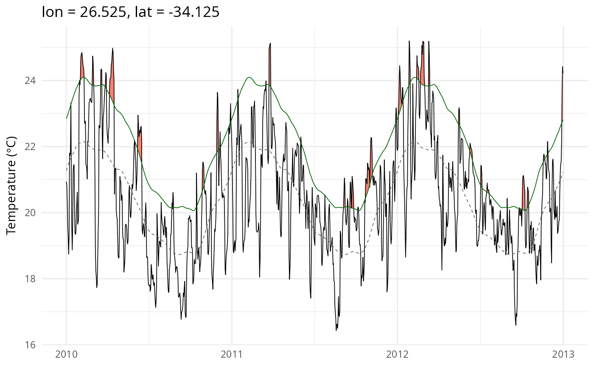

Extracts a single pixel's time series from the SST and climatology NetCDF files and produces an event_line-style plot with flame polygons. The SST and climatology data are read via the C++ backend; no external NetCDF packages are required.
Usage
event_line3(
sst_file,
clim_file,
lon,
lat,
depth = NULL,
var_name = NULL,
start_date = NULL,
end_date = NULL,
spread = 150,
metric = "intensity_cumulative",
event_file = NULL,
coldSpells = FALSE
)Arguments
- sst_file
Path to the SST NetCDF file (or directory of daily files).
- clim_file
Path to the climatology NetCDF from
ts2clm3.- lon
Longitude of the pixel to plot.
- lat
Latitude of the pixel to plot.
- depth
Optional depth (metres) to plot, for a depth-resolved
clim_file(fromts2clm3(depth_range = ...)). Matched to the nearest depth level actually present inclim_file; the matched value is used to readsst_fileat the same level and appears in the plot title. Required whenclim_fileis depth-resolved; must beNULL(the default) for an ordinary 3Dclim_file.- var_name
SST variable name. If
NULL, auto-detected.- start_date, end_date
Optional date range for the plot window (character, for example
"2010-01-01"). If both areNULL, the plot is centred on the most intense event (seespread).- spread
Number of days before and after the peak event to show. Default
150. Only used whenstart_date/end_dateare not set.- metric
Event metric to use for selecting the peak event when
event_fileis supplied. Default"intensity_cumulative".- event_file
Optional path to event NetCDF for centring the window on the most intense event.
- coldSpells
Logical. Render cold-spell (blue) or heatwave (red) flames? Default
FALSE.
Examples
# \donttest{
sst_file <- system.file("extdata/sst_test.nc", package = "heatwave3")
stem <- file.path(tempdir(), "demo")
ts2clm3(sst_file, name = stem,
climatologyPeriod = c("1982-01-01", "2011-12-31"))
#> Reading SST data from /tmp/RtmpfIs2Yx/temp_libpath2ce33150b58c88/heatwave3/extdata/sst_test.nc...
#> Grid: 2 lon x 3 lat x 14276 time = 6 pixels
#> Computing climatology with 1 thread(s)...
#>
1/6 pixels (16%)
2/6 pixels (33%)
3/6 pixels (50%)
4/6 pixels (66%)
5/6 pixels (83%)
6/6 pixels (100%)
#> Writing climatology to /tmp/RtmpzRFSE7/demo_clim.nc...
#> Done.
#>
#> ------------------------------------------------------------------
#> Climatology written to: /tmp/RtmpzRFSE7/demo_clim.nc
#> Rows (long format): 2,196 grid: 2 lon x 3 lat
#>
#> Head:
#> lon lat doy seas thresh
#> 1 26.525 -34.125 1 294.4208 295.9951
#> 2 26.525 -34.125 2 294.4648 296.0311
#> 3 26.525 -34.125 3 294.5088 296.0720
#> 4 26.525 -34.125 4 294.5524 296.1133
#> 5 26.525 -34.125 5 294.5955 296.1553
#>
#> Tail:
#> lon lat doy seas thresh
#> 2192 26.575 -34.025 362 293.5308 295.1848
#> 2193 26.575 -34.025 363 293.5672 295.2141
#> 2194 26.575 -34.025 364 293.6065 295.2460
#> 2195 26.575 -34.025 365 293.6480 295.2776
#> 2196 26.575 -34.025 366 293.6907 295.3100
#>
#> Summary:
#> ocean pixels (valid climatology): 6
#> seas: 291.1 to 295.6
#> thresh: 292.4 to 297.6
#>
#> Examine with hw3_export("/tmp/RtmpzRFSE7/demo_clim.nc", n = 20)
#> or export with hw3_export("/tmp/RtmpzRFSE7/demo_clim.nc", file_out = "out.csv") (.csv/.rds/.parquet)
#> ------------------------------------------------------------------
event_line3(sst_file, paste0(stem, "_clim.nc"),
lon = 26.525, lat = -34.125,
start_date = "2010-01-01", end_date = "2012-12-31")

# }